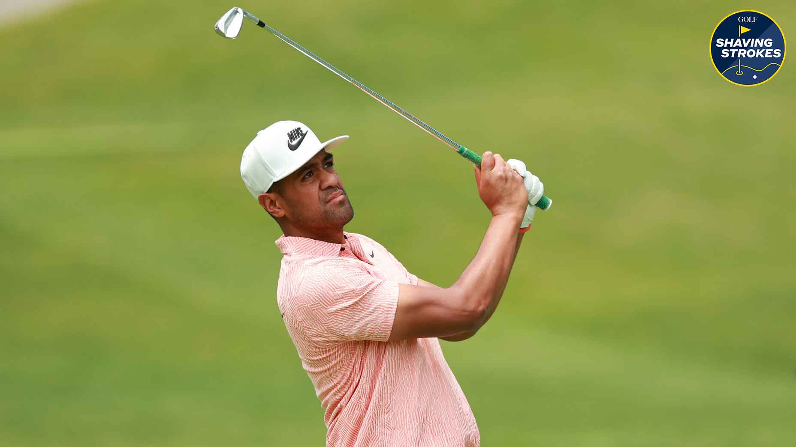
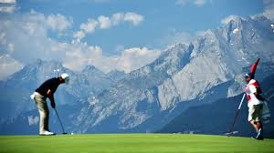

PGA Golf Tour
Find the link here PGA tour
PGA
What is the PGA?
The PGA Tour is the leading professional golf organization for male golfers, featuring an annual schedule of tournaments that span the globe. Known for its prestigious events like The Players Championship, the FedEx Cup Playoffs, and co-sanctioned major championships such as The Masters and The Open Championship, the Tour attracts the world’s top players. Golfers compete for significant prize money, world ranking points, and coveted titles, with stars like Rory McIlroy, Scottie Scheffler, and Jon Rahm often at the forefront. Beyond competition, the PGA Tour emphasizes philanthropy, contributing millions to charitable causes. The organization has recently navigated changes, including increased prize purses, revamped formats, and its collaboration with LIV Golf, reshaping the professional golf landscape.Watch PGA Golf Highlights
Tiger Woods, one of golf's all-time greats, has won 15 major championships and revolutionized the sport with his incredible talent and dominance. His resilience and comeback stories have inspired millions around the world.
"
- Driver
- Irons
- 4 Iron
- 5 Iron
- 6 Iron
- 7 Iron
- 8 Iron
- 9 Iron
- Wedge
- Putter
Here are some common clubs used in golf:
My Favorite Golfers
- Tiger Woods
- John Daly
- Tony Finau
- Brooks Koepka
- Bryson Dechambaeu

Tour
In recent years, the PGA Tour has worked to adapt to a changing sports landscape by enhancing player earnings and improving fan engagement. Initiatives like the FedEx Cup Playoffs and the Player Impact Program (PIP) have provided players with incentives to compete and connect with fans both on and off the course. Major sponsors and broadcast partners like CBS, NBC, and ESPN continue to drive significant revenue, enabling the Tour to expand its reach and introduce innovative formats, such as mixed-team events and global tournaments. Technology has also played a pivotal role, with real-time data, virtual experiences, and social media platforms helping fans stay connected to the action and personalities of the game.
Golf
The recent partnership between the PGA Tour and LIV Golf has been a game-changer for the sport, aiming to end a contentious rivalry and unify professional golf. While details of the agreement are still unfolding, this move has sparked discussions about the future of the sport, from increased collaboration among tours to potential changes in the tournament structure. For fans, this partnership promises more high-profile matchups and potentially greater accessibility to global events. As the PGA Tour navigates this new chapter, its focus remains on maintaining its legacy while embracing opportunities to grow the game and appeal to a broader, younger audience.